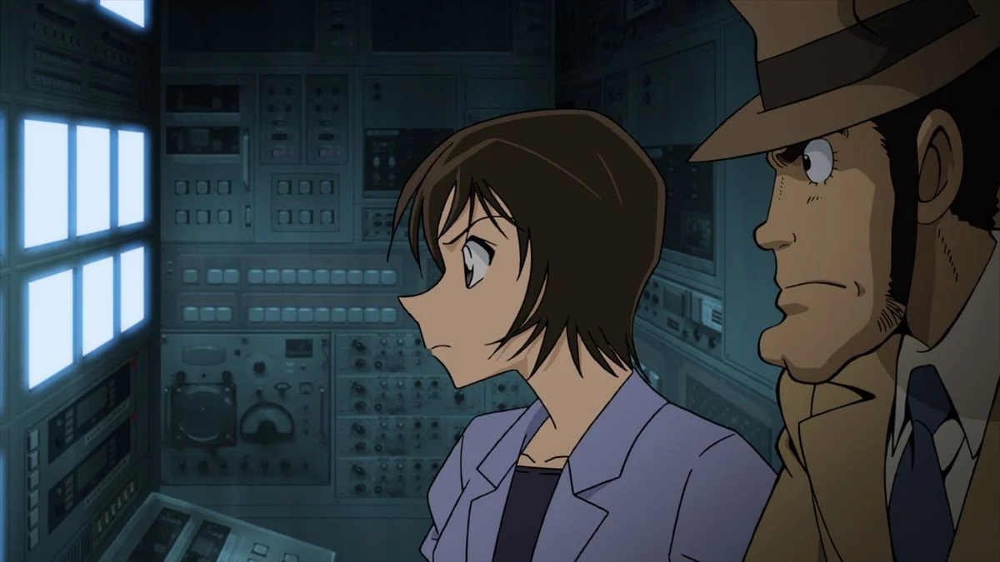

Disclaimer: This is a review of the 2013 feature film "Lupin the Third VS Detective Conan - The Movie," and not the 2009 feature-length TV special of the same name (this is covered in a different review). For watching order: you should watch "The Special" before "The Movie."I initially thought of reviewing "Lupin the Third VS Detective Conan - The Movie" AND "The Special" in the same entry, since they're so closely related, even though the stories are completely unique between them. Even the American home video releases by Discotek have nearly identical covers and title logos, making it hard to tell whether they were the same thing. But there were enough quality differences between them that I figured it was worth separating them. And while you should watch both, starting with "The Special," to get the full picture of the story, "The Movie" is a little more meaningful: made to celebrate TMS Entertainment's anniversary, it was a tie-in to the (arguably) most recognizable cartoon characters in Japan, and Lupin's first theatrical film in more than a decade. Production quality had improved a lot since then, and it shows in spades, setting a new standard for later Lupin films to come. Set after the events of "The Special," both Lupin's gang and Conan are fully aware of each other, including Conan's secret (that he's really a teenager in the body of a little boy). Lupin is beginning a big heist of certain gems, namely "The Cherry Sapphire," in Japan, and Conan is hot on his trail to stop him (in a fantastic opening sequence, Lupin is disguised as Kaito Kid, the regular antagonist thief in Conan's stories). However, Lupin might not simply be after riches this time, as the film slowly reveals he's working under a mysterious employer. Meanwhile, Conan and his friends are focused on the arrival of a major Italian popstar, about to give a concert in Japan, but under distress due to a threat letter demanding that the concert be canceled. In turns out both Lupin and Conan's stories are intertwined, and true to the film's title (unlike the special), they are put at odds with each other, with Conan determined to arrest Lupin (or at least stop him from causing serious damage), and Lupin determined to steal his marks while escaping. I was engaged from start to end, thanks to strong and entertaining direction worthy of a theatrical experience. But at the end, I realized... the story here is kind of stupid. When the mystery of what exactly is going on is revealed, it turns out the stakes aren't all that high, and were supremely convoluted. Compared to the Special, this isn't even satisfying as a mystery. Even compared to the weaker stories from either franchise, this ain't great, and is at best just an excuse for a few big action setpieces. On the other hand, those setpieces are indeed great, and I'd argue the writing and dialogue is excellent. The movie is able to juggle several supporting characters from both franchises (including several side character more from Conan's side than appeared in the Special), giving them all meaningful scenes with fun banter. There's also a bunch of clever easter eggs calling back to classic moments from either franchise, such as having Lupin and Conan narrate each other's TV character intro's at the beginning. So the story might not impress, but the crossover fanservice should.  And regarding the animation... wow! After watching a string of the older Lupin movies and specials, this looks modern, and as if the budget increased by ten. Lupin specials to follow would pretty well match this new standard, but at the time, this must have been a thrill to watch. It's also a significant improvement from the Special; while using the same character designs that make everyone look vaguely like they belong in the same world, the quality of the rendering and movement is more fluid and detailed, and the action is thrilling.It's impressive enough to have me recommend this over the Special, except... the Special is kind of important for certain plot points, and this movie even gets some flashbacks of scenes to that older story. And while there aren't really any character developments to Lupin's half (and there never was in his franchise), I'm told this movie does spoil some things from Conan's later episodes. As someone who didn't watch much (or really, any) of Conan's work before this, I'm confident that watching the Special is enough to enjoy the Movie, but that the Special itself is essential. Part of the charm for me was with the English dub. It's recognizable enough to the older dubs, and there's a certain sass everyone has when they banter with each other, which helps sell the character dynamics. It's a good classic-style dub.I didn't think I'd enjoy "Lupin the Third VS Detective Conan - The Movie" as much as I did. I guess I am a sucker for crossovers like this, and this was one of the most entertaining Lupin films I'd seen yet. This is an easy crowdpleaser for an anime club, although watching both "movies" for a total of 3.5 hours might complicate things...
- "Ani" More reviews can be found at : https://2danicritic.github.io/ Previous review: review_Lupin_the_Third_-_The_Woman_Called_Fujiko_Mine Next review: review_Lupin_the_Third_VS_Detective_Conan_-_The_Special